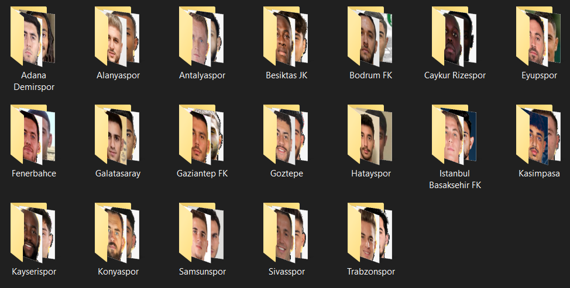
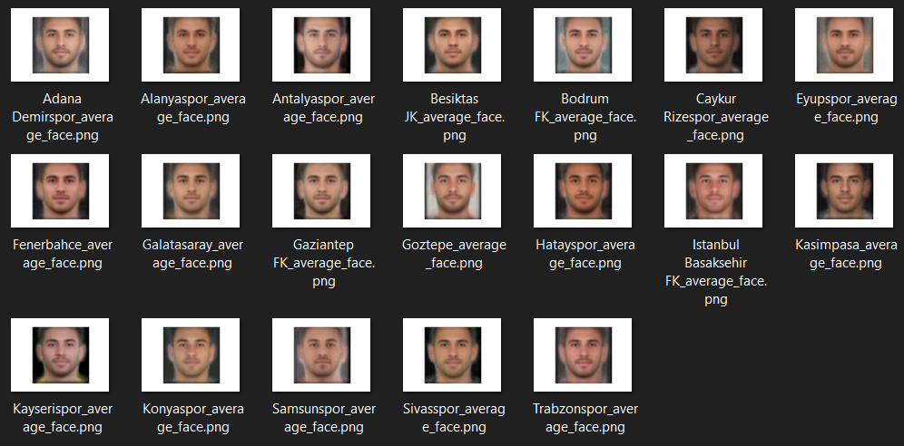
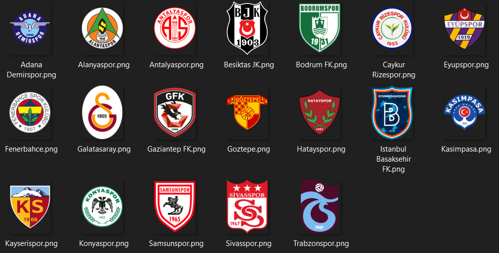
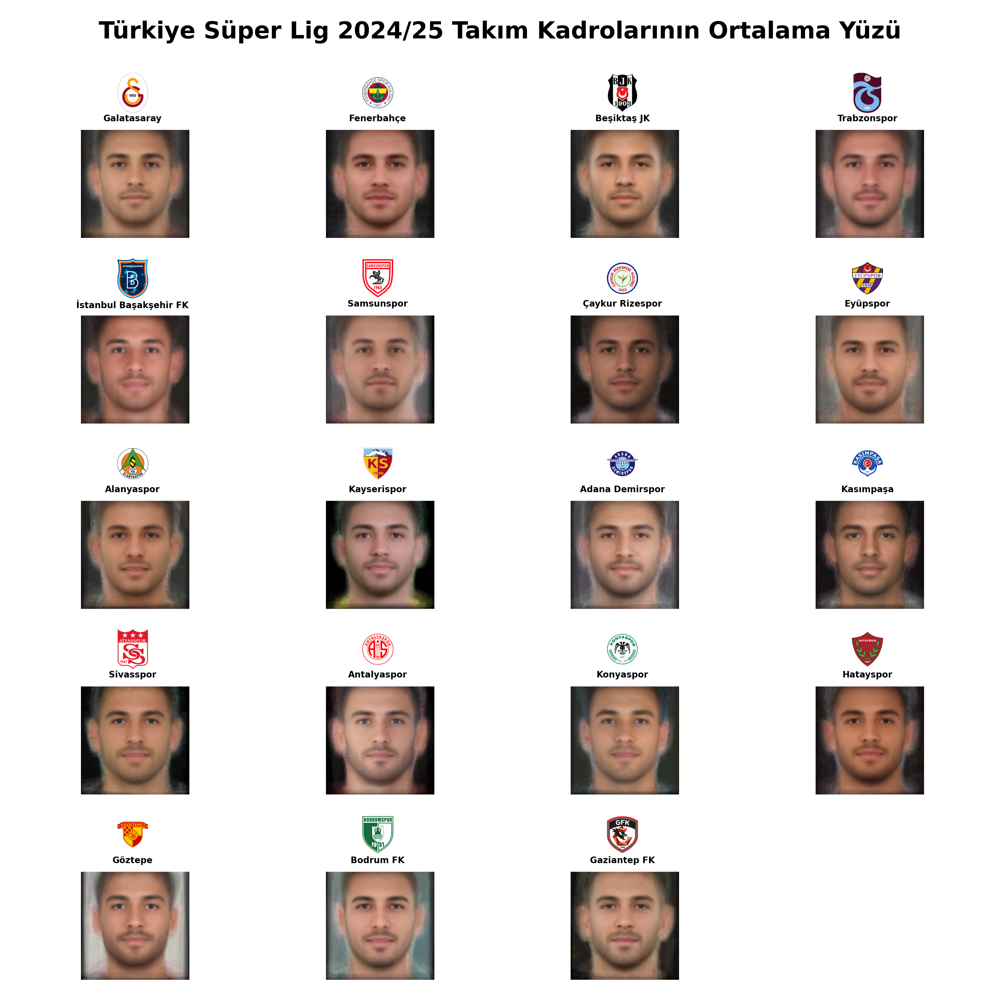

import requests
from bs4 import BeautifulSoup
import os
from PIL import Image
from urllib.parse import urlparse
from facer.facer import load_images, detect_face_landmarks, create_average_face
import matplotlib.pyplot as pltGiriş
Türkiye Süper Lig’deki tüm oyuncuların fotoğraflarını bir araya getirerek her takım için ortalama yüz görselleri oluşturacağız.
Kullanılacak Kütüphaneler
Veri Setinin Hazırlanması
Transfermarkt’tan alacağımız ligdeki 19 takımın URL’lerini sözlüğe atarak başlıyoruz. Yüz hesaplamalarında hata verdiği için Türkçe karakter kullanmadan oluşturalım. Sonrasında tekrar Türkçe karakterler ile değiştireceğiz.
team_urls = {
"Galatasaray": "https://www.transfermarkt.com.tr/galatasaray-istanbul/startseite/verein/141/saison_id/2024",
"Fenerbahce": "https://www.transfermarkt.com.tr/fenerbahce-istanbul/startseite/verein/36/saison_id/2024",
"Besiktas JK": "https://www.transfermarkt.com.tr/besiktas-istanbul/startseite/verein/114/saison_id/2024",
"Trabzonspor": "https://www.transfermarkt.com.tr/trabzonspor/startseite/verein/449/saison_id/2024",
"Istanbul Basaksehir FK": "https://www.transfermarkt.com.tr/istanbul-basaksehir-fk/startseite/verein/6890/saison_id/2024",
"Samsunspor": "https://www.transfermarkt.com.tr/samsunspor/startseite/verein/152/saison_id/2024",
"Caykur Rizespor": "https://www.transfermarkt.com.tr/caykur-rizespor/startseite/verein/126/saison_id/2024",
"Eyupspor": "https://www.transfermarkt.com.tr/eyupspor/startseite/verein/7160/saison_id/2024",
"Alanyaspor": "https://www.transfermarkt.com.tr/alanyaspor/startseite/verein/11282/saison_id/2024",
"Kayserispor": "https://www.transfermarkt.com.tr/kayserispor/startseite/verein/3205/saison_id/2024",
"Adana Demirspor": "https://www.transfermarkt.com.tr/adana-demirspor/startseite/verein/3840/saison_id/2024",
"Kasimpasa": "https://www.transfermarkt.com.tr/kasimpasa/startseite/verein/10484/saison_id/2024",
"Sivasspor": "https://www.transfermarkt.com.tr/sivasspor/startseite/verein/2381/saison_id/2024",
"Antalyaspor": "https://www.transfermarkt.com.tr/antalyaspor/startseite/verein/589/saison_id/2024",
"Konyaspor": "https://www.transfermarkt.com.tr/konyaspor/startseite/verein/2293/saison_id/2024",
"Hatayspor": "https://www.transfermarkt.com.tr/hatayspor/startseite/verein/7775/saison_id/2024",
"Goztepe": "https://www.transfermarkt.com.tr/goztepe/startseite/verein/1467/saison_id/2024",
"Bodrum FK": "https://www.transfermarkt.com.tr/bodrumspor/startseite/verein/44006/saison_id/2024",
"Gaziantep FK": "https://www.transfermarkt.com.tr/gaziantep-fk/startseite/verein/2832/saison_id/2024"
}Web kazıma ile verileri çekmeden önce üç adet dosya oluşturmamız iyi olur. photos adlı klasör takım fotoğraflarını, average_faces adlı klasör ortalama yüzleri ve logos adlı klasör ise takımların logolarını saklayacak.
file1 = 'photos'
file2 = 'average_faces'
file3 = 'logos'
for directory in [file1,file2,file3]:
if not os.path.exists(directory):
os.makedirs(directory)Fotoğrafları indirecek kodu yazalım.
headers = {
'User-Agent': 'Mozilla/5.0 (X11; Linux x86_64) AppleWebKit/537.36 (KHTML, like Gecko) Chrome/47.0.2526.106 Safari/537.36'
}
for team, url in team_urls.items():
response = requests.get(url, headers=headers)
if response.status_code == 200:
soup = BeautifulSoup(response.text, 'html.parser')
images = soup.select('.inline-table img')
team_folder = os.path.join(file1, team)
if not os.path.exists(team_folder):
os.makedirs(team_folder)
for index, img in enumerate(images):
img_url = img.get('data-src')
if img_url:
img_response = requests.get(img_url)
if img_response.status_code == 200:
parsed_url = urlparse(img_url)
img_extension = os.path.splitext(parsed_url.path)[1]
file_name = os.path.join(team_folder, f'{team}_image_{index}{img_extension}')
with open(file_name, 'wb') as file:
file.write(img_response.content)
else:
print(f"Failed to download image {index} from {team}")
else:
print(f"No image URL found for image {index} from {team}")
else:
print(f"Failed to retrieve URL for {team}")Yukarıdaki kodun kilit yerlerine bakalım.
headers = {
'User-Agent': 'Mozilla/5.0 (X11; Linux x86_64) AppleWebKit/537.36 (KHTML, like Gecko) Chrome/47.0.2526.106 Safari/537.36'
}Bir HTTP isteği gönderirken kullanılacak başlıkları (headers) tanımlar ve bunları bir Python sözlüğü olarak belirtir. Bu başlıklar, sunucuya hangi tarayıcıyı ve işletim sistemini kullandığımızı bildirmek için kullanılır. Özellikle User-Agent başlığı, web tarayıcılarının kendilerini tanıttıkları bir başlıktır ve sunucular tarafından kullanıcıyı ve kullanılan yazılımı tanımak için kullanılır.
# Burayı çalıştırmayın
soup = BeautifulSoup(response.text, 'html.parser')
images = soup.select('.inline-table img')BeautifulSoup kütüphanesini kullanarak gelen HTML yanıtını parse’lıyoruz ve sayfadaki .inline-table sınıfına sahip tablo içindeki img etiketlerini seçiyoruz.
# Burayı çalıştırmayın
team_folder = os.path.join(file1, team)
if not os.path.exists(team_folder):
os.makedirs(team_folder)Takım adıyla bir klasör yolu oluşturuyoruz (file1 ana dizin, team takım adı). Eğer bu klasör yoksa, os.makedirs kullanarak bu klasörü oluşturuyoruz.
# Burayı çalıştırmayın
img_url = img.get('data-src')
if img_url:
img_response = requests.get(img_url)
if img_response.status_code == 200:
parsed_url = urlparse(img_url)
img_extension = os.path.splitext(parsed_url.path)[1]
file_name = os.path.join(team_folder, f'{team}_image_{index}{img_extension}')
with open(file_name, 'wb') as file:
file.write(img_response.content)img.get('data-src') ifadesiyle, resim URL’ini alıyoruz. Eğer img_url varsa, bu URL’e bir HTTP GET isteği gönderiyoruz. İstek başarılı olursa, URL’in yolunu ayrıştırıyoruz ve resim dosya uzantısını (.jpg veya .png olabilir) alıyoruz. Resim dosyasını takım klasörüne uygun ad ile (örneğin team_image_0.jpg) kaydediyoruz.
photos dosyasının aşağıdaki gibi olmasını bekleriz.

Reponun Klonlanması
Ortalama yüz hesaplamasında faydalanacağımız repoyu proje klasörümüze klonlayalım.
git clone https://github.com/johnwmillr/facer.git FacerKlonlama işleminden sonra bulunduğumuz dizinde sadece Facer klasöründeki facer klasörünü bırakabiliriz. facer klasörünün içinde ise facer.py ve utils.py dosyaları kalabilir.
Yukarıdaki işlemden sonra aşağıdaki gibi zip’li dosyayı indirip unzip’liyor ve dosyayı bulunduğumuz dizinde açtığımız model adlı klasöre taşıyoruz.
curl -O http://dlib.net/files/shape_predictor_68_face_landmarks.dat.bz2
bunzip2 shape_predictor_68_face_landmarks.dat.bz2mkdir model
mv shape_predictor_68_face_landmarks.dat modelOrtalama bir yüze ulaşmak için uygulanan adımlar burada detaylı bir şekilde veriliyor.
Ortalama Yüzlerin Hesaplanması
teams = list(team_urls.keys())
folders = [f'./{file1}/' + team for team in teams]team_urls sözlüğündeki anahtar değerleri alarak takımları teams değişkenine, her bir takımın fotoğraflarının bulunduğu dosya adlarını folders değişkenine atıyoruz.
Hesaplama bölümüne geçebiliriz. Bu bölüm, buradaki repoda verilen örnek kod ile rahatlıkla anlaşılabilir.
for index, folder in enumerate(folders):
try:
images = load_images(folder)
landmarks, faces = detect_face_landmarks(images)
average_face = create_average_face(faces, landmarks, save_image=False)
file_name = f'{teams[index]}_average_face'
plt.imshow(average_face)
plt.axis('off')
plt.savefig(os.path.join(file2, file_name))
plt.show()
except Exception as e:
print(f"Error processing {teams[index]}: {e}")average_faces dosyasının aşağıdaki gibi olmasını bekleriz.

Takım Logolarının İndirilmesi
for team, url in team_urls.items():
response = requests.get(url, headers=headers)
if response.status_code == 200:
soup = BeautifulSoup(response.content, 'html.parser')
profile_container = soup.find('div', class_='data-header__profile-container')
if profile_container:
img_tag = profile_container.find('img')
if img_tag and 'src' in img_tag.attrs:
img_url = img_tag['src']
img_response = requests.get(img_url)
if img_response.status_code == 200:
img_filename = os.path.join(file3, f"{team}.png")
with open(img_filename, 'wb') as f:
f.write(img_response.content)
print(f"Logo for {team} downloaded and saved.")
else:
print(f"Failed to download logo image for {team}.")
else:
print(f"Logo image not found for {team}.")
else:
print(f"Profile container not found for {team}.")
else:
print(f"Failed to fetch {url}. Status code: {response.status_code}")logos dosyasının aşağıdaki gibi olmasını bekleriz.

Türkçe Karakterlerin Oluşturulması
teams_turkish = {
"Besiktas JK": "Beşiktaş JK",
"Caykur Rizespor": "Çaykur Rizespor",
"Eyupspor": "Eyüpspor",
"Fenerbahce": "Fenerbahçe",
"Goztepe": "Göztepe",
"Istanbul Basaksehir FK": "İstanbul Başakşehir FK",
"Kasimpasa": "Kasımpaşa"
}
directories = [file2, file3]
for directory in directories:
logo_files = os.listdir(directory)
for filename in logo_files:
name, ext = os.path.splitext(filename)
for key, value in teams_turkish.items():
if key in name:
new_name = name.replace(key, value)
new_filename = new_name + ext
old_path = os.path.join(directory, filename)
new_path = os.path.join(directory, new_filename)
os.rename(old_path, new_path)
print(f"Renamed {filename} to {new_filename} in {directory}.")
for i in range(len(teams)):
for key, value in teams_turkish.items():
if key in teams[i]:
teams[i] = valueGörselin Oluşturulması
5 satır ve 4 sütundan oluşan bir alt grafik ızgarası oluşturalım.
fig, axs = plt.subplots(5, 4, figsize=(32, 32))
for i, team in enumerate(teams):
filename = f"{file2}/{team}_average_face.png"
img = Image.open(filename)
logo_filename_png = f"{file3}/{team}.png"
logo_filename_jpg = f"{file3}/{team}.jpg"
if os.path.exists(logo_filename_png):
logo_img = Image.open(logo_filename_png).convert("RGBA")
elif os.path.exists(logo_filename_jpg):
logo_img = Image.open(logo_filename_jpg).convert("RGBA")
else:
print(f"Logo image for {team} not found.")
continue
new_logo_width = img.width // 6
logo_img = logo_img.resize((new_logo_width, logo_img.height * new_logo_width // logo_img.width), Image.Resampling.LANCZOS)
white_bg = Image.new("RGBA", logo_img.size, "WHITE")
logo_img = Image.alpha_composite(white_bg, logo_img).convert("RGB")
combined_img = Image.new('RGB', (img.width, img.height + logo_img.height), "WHITE")
logo_x = (img.width - logo_img.width) // 2
combined_img.paste(logo_img, (logo_x, 0))
combined_img.paste(img, (0, logo_img.height))
row = i // 4
col = i % 4
axs[row, col].imshow(combined_img)
axs[row, col].axis('off')
axs[row, col].annotate(team, (0.5, 0.77), xycoords='axes fraction', ha='center', va='top', fontsize=20, fontweight='bold')
for j in range(len(teams), 20):
fig.delaxes(axs.flatten()[j])
fig.suptitle("Türkiye Süper Lig 2024/25 Takım Kadrolarının Ortalama Yüzü", fontsize=54, fontweight='bold')
plt.tight_layout(rect=[0, 0, 1, 0.96])
plt.savefig("average_faces_final.png")
plt.show()
Gelecek içeriklerde görüşmek dileğiyle.